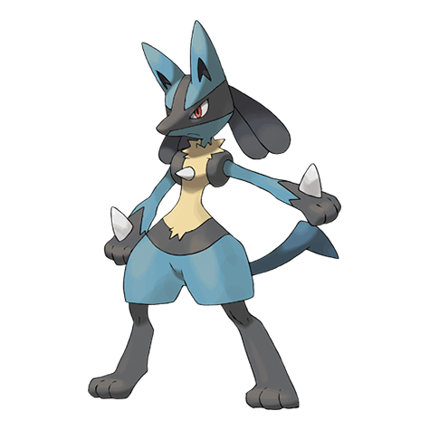

ルカリオの弱点（2倍）
ほのお かくとう じめん
#448 · かくとう / はがね · はどうポケモン · 第4世代
はどうポケモン、そしてある1世代を代表する人気者です。ルカリオはかくとう・はがねの複合タイプで、種族値合計は525。すばやく的確で、物理と特殊のどちらからでも危険な存在です。

BST 525
とくせい：ふくつのこころ · せいしんりょく · せいぎのこころ（隠れ） · 進化段階：最終進化
18タイプすべての相性表は、 タイプ相性表.
ほのお かくとう じめん
ノーマル くさ こおり むし いわ ドラゴン あく はがね
どく
ポケモン図鑑は拡充中です。こちらのページは公開済みです。
ポケモンのデータと豆知識
ルカリオは全国図鑑No.448、第4世代のはどうポケモンです。かくとう・はがねの複合タイプに種族値合計525を持ち、系統の最終段階にあたります。リオルが入って、ルカリオが出てくる。それが一族のすべてです。とくせいはふくつのこころとせいしんりょくが標準で、隠れとくせいがせいぎのこころ。1つの地方、2段階の進化、そしてゲームより先に映画で主役を張ったほど有名なデザインです。
防御面では地味に優秀です。かくとうとはがねの組み合わせは、よく使われる攻撃タイプの大半を半減し、その数は8つに及びます。ノーマル、くさ、こおり、むし、いわ、ドラゴン、あく、はがね。抜けてくるのはほのお、かくとう、じめんの3つだけ。そしてどくは弾かれるどころか一切効きません。図鑑でも屈指の、きれいな受け出し先です。
タイプの2つの半分は、それぞれ別の相手を受け持ちます。はがねは、かくとうタイプが苦手なフェアリー、ドラゴン、こおりを処理し、かくとうは、はがねなら楽だと思っているノーマルやいわに対応します。残ったのは弱点3つ（ほのお・かくとう・じめん）と、どくへの完全な無効です。伝説でない範囲では、これ以上ないほど整った防御プロフィール。中位の種族値でこの補完がそろうのは珍しく、系統が人気を保ち続ける理由の半分はここにあります。
種族値もタイプと同じことを言っています。特攻115がカードで最も高く、攻撃110がすぐ後ろに続きます。どちらでも戦える珍しい配分で、特殊がやや上なのとはがねタイプが、初期設定を遠距離側へ傾けます。タイプと数値を合わせれば役割ははっきりします。相性が逆を求めない限りは特殊寄りで戦う、両刀のアタッカーです。
6つの数字を読んでください。HP70、攻撃110、防御70、特攻115、特防70、すばやさ90。ここには意図的な対称性があります。70が3つ、100を超える数字が2つ。形が示すのは柔軟さで、どちらからでも打てる攻撃力はあるが、油断して耐えられるほどの耐久はない、という意味です。多くの戦いで決め手になるのはすばやさ90。重い相手は抜けますが、専業の速い相手には抜かれます。無駄もなく、水増しもない。万能の選択肢を持った、専業の道具箱です。
すばやさ90はフィールドの中間層に住んでいます。受け役より速く、専業のアタッカーより遅い。だから毎回の戦いが保証ではなく相性の判断になります。最終進化の合計は525で、リオルの285よりずっと高く、最終進化の目安とされる509付近にもきちんと収まります。特攻を軸に組み、パーティに必要なほうの防御を補い、あとは波動に任せてください。
実際のところ、弱点は3つしかなく、そのうち2つはよく出てきます。ほのおとかくとうはどこにでもあり、じめんはやや少なめです。価値が積み上がるのは耐性の側です。ノーマル、くさ、こおり、むし、いわ、ドラゴンはすべて半減で、どくはまったく通りません。ほのおわざを食べてくれる相棒を1匹見つければ、防御面の宿題は終わりです。そこから先はほぼプラスで、耐性が受け持ち、攻撃が決めます。
目安としては、相性が逆を主張するまで特殊側で押し、近接わざは見返りがある戦いのために取っておき、ほのおわざを持つ相手には近づけないことです。ルカリオは盤面を読む人に報いてくれます。配分は相性表のほとんどに答えを用意していて、あとは決めるべきターンを選ぶだけです。
ヌズロックで問われるのは、ごくシンプルです。次のルートを生き延びて、借りを返せるのか。実際に回してみるならこちらで ヌズロック編成、代わりのポケモンは ランダム選出 道の途中で枠が空いたときにどうぞ。2つの候補がどうしても決まらないときは、 ポケモンルーレット が決めてくれます。完成したパーティでは柔軟なアタッカーとして入り、基本は特殊、相性が求めるときは物理に切り替えます。
ルカリオは1本の道の両側を走れます。相性を読んでから側を選ぶだけです。インファイトで物理、はどうだんで遠距離。 パーティ編成 で6匹にどちらの型が必要かが分かり、 ランダムメガシンカ ではメガシンカが使える場合のメガルカリオまで掘り下げられます。色違い狙いなら確率はこちら、 色違いの出現率 実際の抽選は ランダム色違い生成。そして ブログ にはせいかく、確率、縛りルールの詳しい解説があります。
よくある質問
かくとう・はがねの複合タイプです。ほのお、かくとう、じめんから2倍、ノーマル、くさ、こおり、むし、いわ、ドラゴン、あく、はがねからは0.5倍、どくは完全に無効です。防御面の全体像はこれだけ。それだけで図鑑でも屈指の優良カードになります。
ほのお、かくとう、じめんで、いずれも2倍です。どくは一切通らず、耐性は8タイプに及びます。ジム、ライバル戦、そして本当に大事な戦いの前には、相性カードを確認し直してください。
リオルがルカリオになります。系統はそれだけです。2段階、進化1回、分岐なし。この段階でタイプが変わり、リオルはかくとう単独、ルカリオははがねが加わって相性カードが一度に入れ替わります。進化は取り消せないので、はがねタイプは期間ではなく決断です。
ふくつのこころとせいしんりょくが標準、隠れとくせいがせいぎのこころです。3つは3つの別のメッセージを持っています。ふくつのこころはひるみを受けると得をし、せいしんりょくはひるみを防ぎ、せいぎのこころはあく技を攻撃上昇に変えます。隠れとくせいは特殊な入手経路が要るので、実際のプレイでは最初の2つに出会うことがほとんどです。持っているとくせいに合わせて型を組みましょう。
箱が2つと矢印が1本です。左がリオル、右がルカリオ、そのあいだに進化の条件。なつき度が十分に高くなった瞬間、リオルの285がルカリオの525になります。
特攻115が配分で最も高く、攻撃110も十分近いので、どちらも現実的な選択肢です。初期設定が優れているのは特殊の側というだけです。カードのほかの数値は、この2つを届かせるために存在しています。パーティに物理の答えが必要なら、攻撃110は飾りではなく実際の戦力です。